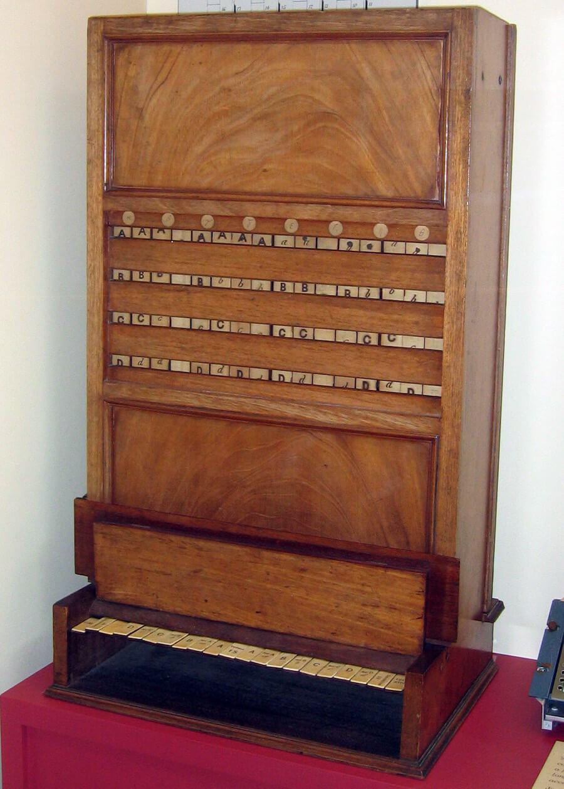

Lesson 1: Introducing KRR
Learning outcomes:
After completing this lesson you should be able to:
- explain what main topics we study
- identify deduction, induction, and abduction in examples
- understand the general historical antecedents of the topics we study.
1.1 The name KRR
Knowledge Representation and Reasoning (KRR) concerns the representation of knowledge in a form suitable for computational manipulation and exchange, together with the use of reasoning to process knowledge represented in this way in order to both generate new knowledge and to uncover properties of existing knowledge. Typically KRR uses techniques which originated in the mathematical study of logic and in philosophy, but the needs of AI have led to contemporary KRR diverging from these disciplines.
This module deals with:
- The representation of knowledge, and
- Reasoning about knowledge using representations in formal logics.
In this lesson you will be introduced to the meanings of these terms.
Note
The abbreviation KRR is always pronounced by saying the name of each letter individually: K R R. In computing this is like AI, which is always A I, but unlike some names such as SQL which sometimes becomes 'sequel' in speech.
In the Computing literature, KRR is sometimes shortened to KR and Knowledge Representation can include reasoning in its meaning. The main academic conference on the topic is known simply as KR.
1.2 Introducing the main concepts
What is inference/reasoning?
Reasoning is computation with symbols representing statements, rather than with numerals. This means it is very like arithmetic. For example in binary addition (addition base 2) we have inputs combined following rules to produce an output.
In reasoning we deal with statements like this:
If it is a bank holiday then the weather is bad; it is a bank holiday; so the weather is bad
By representing the statements as symbols that can be manipulated according to rules, we see processes like this:
Notice the analogy with the numerical computation: two inputs are combined according to a rule to produce an output result.
What is knowledge?
One definition is 'things that can be known'. So, anything that could fill the gap here:
''Harry knows that …''
Another is that knowledge is a relationship between an agent and a proposition.
Propositions are either true or false e.g.
- \(2+2=4\),
- Today is sunny.
More accurately: propositions are uses of sentences in specific contexts which are true or false (because of indexicals such as 'today')
Questions and commands are not propositions. For instance:
- Close the door!
- Are there 26 students in the room?
We don't deal with
- ''Harry knows how to … (play the piano)'', nor
- ''Harry believes that …'' (although there are logics of belief)
What is representation?
Representation, in the context of KRR, is modelling something in such a way that handling the model is better suited to our purpose than handling the thing itself.
Representations generally abstract from what is modelled (leaving out details). They may introduce features of their own that do not correspond to anything in the modelled domain.
In the well-known map of the London Underground the connections between stations are represented, but distances are not represented and directions are only sometimes roughly represented. Whether a station is North or South of the river Thames is represented, but an East-West or North-South relationship on the ground may not be indicated at all correctly.
What is knowledge representation?
There is no universally agreed answer, but we can make some observations
- It is:
- How to appropriately encode and utilise information in computational models of cognition.
- such encoding is generally explicit, symbolic, unambiguous
- the use and modelling is mostly engineering orientated, but sometimes aims for psychological or linguistic plausibility.
Knowledge representation often involves:
- syntax,
- semantics,
- inference,
but only syntax and inference are evident in implementation.
There are many different KR languages (ways to write down or encode knowledge).
- some have more than one syntax (e.g. textual/graphical)
- different languages have different expressiveness and computational properties.
1.3 Why do we need knowledge representation?
One motivation is the current awareness that we need explainable AI. That is, not just systems that can carry out complex tasks, but ones that can explain why they came to a particular decision. This can be important to avoid bias and discrimination that can arise, for example, in some machine learning situations where the data is not appropriate for the ultimate use of the system.
KR can be useful to describe behaviour of sufficiently complex systems (human or otherwise) in terms of beliefs, goals, intentions, hopes. For example:
-
the computer moved the pawn to block a threat from the white bishop
- even if the reason was just because of heuristic search of a game.
-
The program diagnosed a faulty bulb because the fuse and switch are working correctly.
These type of examples come from an approach known as the physical symbol system hypothesis suggested in this paper:
- Allen Newell and Herbert A. Simon, “Computer Science as Empirical Inquiry: Symbols and Search,” Communications of the ACM. vol. 19, No. 3, pp. 113-126, March, 1976. Available online here
1.4 KRR research at Leeds (some examples)
We will return to spatial information in knowledge representation and reasoning in detail in unit 5. There have been a number of important contributions to research in this area by people working at Leeds. Some of these contributions are highlighted on this page, which links to papers on the following two research areas:
-
The Region-Connection Calculus or RCC is a formal system of spatial relationships corresponding to ideas such as inside, touching only at the boundary, overlapping, separate from. This was developed by David Randell, Zhan Cui, and Tony Cohn, starting with initial work at Warwick University. The origins go back much further to ideas of A. N. Whitehead and others in the early part of the twentieth century.
-
Qualitative spatial and temporal representation and reasoning (QSTR) has been used in event recognition from videos. The basic problem here is to determine what event is taking place in a video. For example, given two people engaged in some activity, can you tell if they are having an argument, sharing a meal, or playing a card game? The way QSTR is used here involves abstracting from geometrical data (bounding boxes for people and objects) in individual frames and modelling how relationships (between these bounding boxes) change over time. This enables patterns of relationships to be discovered and used as part of the mechanism to identify events.
Other KRR activity at Leeds includes the following:
-
Brandon Bennett has worked on the ontology of geographic information including projects supported by the Ordnance Survey and questions such as how to formulate definitions of concepts, for example: forest, mountain and building, in a logical way.
-
A new project starting in 2022, led by Ian Gregory at Lancaster, involves spatial relationships in an interdisciplinary context and includes collaboration with Leeds staff John Stell and Tony Cohn, as well as other researchers at Lancaster together with Manchester, Bristol, Stanford, and IUPUI Indiana. The project, funded by ESRC and NSF, will include the use of spatial relationships in texts to represent information about narrative descriptions in language. The part of the project where Leeds is involved provides a representation of spatial relationships in historical narratives so that patterns of relationships can be discovered using KRR techniques. The historical narratives in the project include transcripts of interviews with survivors of the Holocaust, as well as nineteenth century and earlier writing about the Lake District.
1.5 Semantic technology
The semantic web has not delivered all that was promised, but ontology and other semantic technologies remain a key application area for KRR.
Read: Horrocks, I (2008) Ontologies and the Semantic Web Comm ACM 51(12) pp58-67 December 2008
Horrocks' article raises several important issues, noted below:
-
Data integration is a problem.
-
Tagging with keywords is not enough and we really need to have some way to represent what the terms mean. Web search is still very limited.
RDF
RDF (Resource Description Framework) is a way to represent knowledge using triples. For example, knowledge that paper is made from wood, could be represented by three things in order:
- paper (the subject of the triple)
- is made from (the predicate of the triple)
- wood (the object of the triple)
One advantage of RDF is the way a set of triples forms a graph where the nodes are labelled by things that can be subjects or objects, and the directed links are labelled by predicates.
Ontology
In computer science, an ontology is an engineering artifact, usually a model of (some aspect of) the world; it introduces vocabulary describing various aspects of the domain being modelled and provides an explicit specification of the intended meaning of that vocabulary (Horrocks 2008, p61).
RDF (and various extensions of it) is limited as an ontology language because it has limited expressiveness. This means there are statements that it is useful to make but which are beyond what can be expressed in RDF.
The Web Ontology Language OWL is a W3C standard designed for the Semantic Web, and is much more expressive than RDF.
Description logics
A key feature of OWL is its basis in Description Logics (DLs), a family of logic-based knowledge-representation formalisms descended from Semantic Networks and KL-ONE but that have a formal semantics based on first-order logic. These formalisms all adopt an object-oriented model like the one used by Plato and Aristotle in which the domain is described in terms of individuals, concepts (called classes in RDF), and roles (called properties in RDF) (Horrocks 2008).
1.6 Early History of KRR
1.6.1 John McCarthy 1958
John McCarthy was not merely a leading figure in KRR from the 1950s onwards, but introduced the term "Artificial Intelligence" itself.
Here he writes about a proposed AI system in 1959. The quotes below are taken from Mechanisation of thought processes: proceedings of a symposium held at the National Physical Laboratory on 24th-27th November 1958. (1959), in which Dr McCarthy presents his ideas, and his contemporaries at the symposium offer their responses. If you would like to read the document itself, a clearer version is also available here.
''The advice taker is a proposed program for solving problems by manipulating sentences in formal languages…
… Assume I am seated at my desk at home and I wish to go to the airport. My car is at home also. The solution to the problem is to walk to the car and drive the car to the airport. First, we shall give a formal statement of the premises the advice taker uses to draw the conclusions. Then we shall discuss the heuristics which cause the advice taker to assemble these premises from the totality of facts it has available.''
But not everyone thought it would be any use at all:
''Prof. Y. Bar-Hillel: Dr. McCarthy's paper belongs in the Journal of Half-Baked Ideas …
…A deductive argument, where you have first to find out what are the relevant premises, is something which many humans are not always able to carry out successfully. I do not see the slightest reason to believe, at present, machines should be able to perform things that humans find trouble in doing. I do not think there could possibly exist a program which would, given any problem, divide all the facts in the universe into those which are and those which are not relevant for the problem…"
McCarthy's reply: "… I hope that once we have succeeded in making computer programs reason about the world, we will be able to reformulate epistemology as a branch of applied mathematics no more mysterious or controversial than physics…''
1.6.2 Earlier history
McCarthy's dream of reducing knowledge to mathematics is related to much earlier ideas (e.g. Leibniz' dream of reducing argument to calculation).
Formal logic developed in the 19th and 20th centuries. Much of this later work was motivated from mathematics and philosophy rather than everyday commonsense reasoning.
Boole (1847) developed an algebraic calculus for some forms of argument using statements like All Xs are Ys and Some Ys are not-Zs etc.
This was mechanised by Jevons in 1869.

But logical machines can be traced back as far as Raymond Lull (1235–1315) with a mechanical system for generating combinations of concepts.
1.7 Aspects of logics
Traditionally, logic is the study of entailment (and syntax, semantics, rules of inference).
Inference and other mechanisms
We saw the idea that computing with propositions is analogous to computing with numbers. There are different processes; here we mostly study deduction but you should also be aware of induction (which in the sense below is not the same as the deductive mechanism called 'mathematical induction'), and abduction.
Humans often use induction and abduction but it must be remembered that only in the case of deduction is there any guarantee that the conclusion is correct. However, correctness may not be the only criterion of value in some cases. It can be more useful to have a likely (but wrong) conclusion in a short time than a certainly correct answer after a very long delay.
Deduction (inferring logical truths)
Induction (generalising from examples)
Abduction (explaining observations from background theory)
The variety of logics
First order logic (FOL) has played a leading role in KR. (also called 1st order predicate calculus).
But FOL is just a starting point, and there are lots of other logics. Some of these are parts of FOL (subsets of FOL); others extend FOL with additional features (supersets of FOL). There are still other logics which are neither subsets nor supersets of FOL.
-
Propositional logic
Here the only things manipulated are propositions; things that are true or false.
-
First order logic
Here, besides statements that can be true or false, there are also individual things that the statements can refer to. There is quantification over the collection of individuals. That means you can say that all of them have some property, or that at least one of them has some property.
-
Higher order logic
This differs from the first order case by allowing quantification over sets of the individuals (second order logic), or sets of sets, or sets of sets of sets, etc of the individuals. This can make some things easier to express at the expense of being more impractical to do any computation.
-
Modal logics (closely related to description logics)
These arose traditionally in expressing statements about propositions such as necessity and possibility. For example it is necessarily the case that if Zaphod Beeblebrox has two heads then he has more than one head. But it is only possible that Douglas Adams will one day be more famous than Shakespeare.
Modal logics can be used to represent concepts such as an agent knowing something, a person believing something, someone being obliged to do something, one event happening in the future or the past of something else (temporal logics), etc.
-
Non monotonic logics
In classical logic adding new facts does not make something false that was previously true. But in a lot of human situations we do this in the sense of assuming things to be true that can be rejected after getting more information. For some reason in AI this is always explained by the example of knowing that \(\mathit{Tweety}\) is a bird, then taking as true that \(\mathit{Tweety}\) flies, only later to reject that when you are introduced to \(\mathit{Tweety}\) herself and you realise you are talking to a penguin. This kind of default reasoning is not easy to model fully, but it is certainly something different from classical logic.
Inference and computation
A tough issue that any AI reasoning system must confront is that of tractability.
A problem domain is intractable if it is not possible for a (conventional) computer program to solve it in 'reasonable' time (and with 'reasonable' use of other resources such as memory).
Certain classes of logical problem are not only intractable but also undecidable.
This means that there is no program that, given any instance of the problem, will in finite time either:
- find a solution; or
- terminate having determined that no solution exists.
1.8 Review of basic mathematical terminology
The module uses some very basic discrete mathematics terminology. Some concepts are listed here, but for fuller explanation see any good book on the topic. Rosen's Discrete Mathematics and its Applications (2019) is one such example.
Sets
Remember that a set is a collection of things without any order, and in which repeated elements are not allowed.
Finite sets can be written down as \(\{1, 2, 4\}\). This is the same set as \(\{2, 1, 4\}\).
The empty set can be written \(\{ \}\) or as \(\varnothing\). The symbol \(\in\) means 'is an element of' as in \(2 \in \{4,1,2\}\).
You should know intersection \(\cap\) and union \(\cup\) and cartesian product \(\times\). You should know the idea of a subset, denoted \(A \subseteq B\) meaning that \(A\) is any set made entirely of elements of \(B\), including the extreme cases of none of the elements and all of them.
The difference of sets is denoted many different ways, but here by a minus sign. \(A - B\) is the set of things which are in \(A\) but not in \(B\).
In the context of a set \(U\) and a subset \(A \subseteq U\) the complement of \(A\), sometimes written \(\overline{A}\) or \(-A\), is the difference \(U-A\).
The notation \(\mathbb{N}\) is used for the set of natural numbers. In this module we follow the convention that zero is a natural number. In the language of set theory we can express this as \(0 \in \mathbb{N}\).
Relations
Much knowledge involves binary relations. Such as:
-
Harry is older than Sam
-
Paper is made from wood
-
Bradford is close to Leeds
A binary relation on a set \(X\) is a set of pairs of elements of \(X\). In other words any subset of \(X \times X\).
E.g. we might represent 'is older than' on the set \(\{\mathit{Harry}, \mathit{Sam}, \mathit{Jill}\}\) by the relation \(\{(\mathit{Harry}, \mathit{Sam}), (\mathit{Jill}, \mathit{Sam})\}\).
Diagrams with arrows are useful so that if the pair \((\mathit{Jill}, \mathit{Sam})\) is in our relation we can draw this as an arrow from \(\mathit{Jill}\) to \(\mathit{Sam}\). Of course the direction of the arrow is important.
Lists and non-binary relations
A binary relation models a kind of statement, the truth of which depends on two parameters.
But we may have dependence on three parameters.
-
Birmingham is between London and Glasgow
-
7 is the sum of 3 and 4
A ternary relation on \(X\) is a subset of \(X^3 = X \times X \times X\).
e.g. \(\{(\mathit{Birmingham}, \mathit{London}, \mathit{Glasgow}), (\mathit{Manchester}, \mathit{Leeds}, \mathit{Liverpool})\}\)
There is no generally agreed way to draw pictures of ordered triples, which is at least one reason why binary relations are easier to think about.
You can think of an ordered pair as a list of length two. In general an \(n\)-tuple is a list of length \(n\).
It makes sense to allow \(n\) to be 0 or 1 sometimes. A set of lists of length 1 with elements from \(X\) is really the same as (that means 'is best thought of as being') a subset of \(X\). We can think of this as modelling a property that elements of \(X\) may have.
This might be modelling the fact that oranges and lemons are citrus fruits and apples and bananas are not.
A set of lists of length \(0\) is either \(\{\}\) or \(\{()\}\). Either the empty set (no lists) or the set containing the unique list of length zero (the empty list). We can think of these two sets as being the truth values false and true respectively. A \(0\)-ary relation models (can model) something that is true or false (a proposition).
The set of all lists of length \(n\) made out of elements of a set \(A\) is often denoted \(A^n\) where this means the \(n\)-fold cartesian product.
Functions
These are also called maps, mappings, and various other things. Writing \(f: A \to B\) indicates that \(f\) is a function which given any \(a\in A\) gives an element of \(B\) which is denoted \(f(a)\). This can be thought of as a special kind of relation; a subset of \(A \times B\) where every \(a \in A\) occurs in exactly one pair in the subset.
Pictorially, drawing a relation as a collection of arrows connecting things from one set to another, a function has exactly one arrow leaving every element of the first set. There is no requirement that the elements of the second set have any particular number of arrows coming in to each of them. If there is at least one inward arrow for every element of the second set then the function is surjective. If there is at most one it is injective. If a function is both injective and surjective it is said to be bijective.